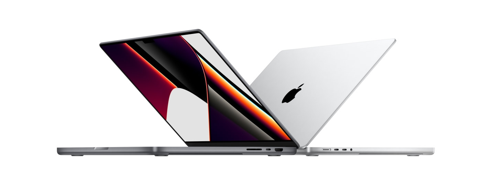

Суперсила профессионалов.
Apple создали самый мощный MacBook Pro в истории. И это монстр.
Супербыстрые M1 Pro и M1 Max — первые чипы Apple, разработанные специально для профессионалов.
Они дают феноменальную производительность и обеспечивают удивительно долгое время работы без подзарядки.
Прибавьте к этому потрясающий дисплей Liquid Retina XDR, превосходную камеру и звук, а также больше портов для профессиональной работы.
С этим ноутбуком всё становится возможным.
Теперь держитесь.
Чипы M1 Pro и M1 Max — это совершенно новый масштаб архитектуры М1.
И впервые Apple разработали систему на чипе специально для профессиональных ноутбуков.
У обоих чипов больше ядер в центральном и графическом процессорах и больше объединённой памяти, чем в чипе M1.
А ещё мощная система Neural Engine для высокой скорости машинного обучения и обновлённые медиапроцессоры с поддержкой ProRes.
M1 Pro и M1 Max позволяют профессионалам создавать то, что раньше казалось невозможным.
Дико быстро.
M1 Pro выводит архитектуру M1 на новый уровень производительности, открывая невероятные возможности для профессиональной работы.
До 10 ядер в центральном процессоре и до 16 в графическом, 16‑ядерная система Neural Engine,
выделенные медиапроцессоры для кодирования и декодирования файлов с поддержкой кодеков H.264, HEVC и ProRes — такой ноутбук легко справится с самыми амбициозными проектами.
ProMotion.
Это первые компьютеры Mac, для которых была реализована поддержка ProMotion.
С ней всё работает быстро и гладко — от прокрутки веб-страниц до движений в компьютерных играх, — и при этом ноутбук потребляет меньше энергии.
Максимальная частота обновления экрана составляет 120 Гц. Фактическое значение адаптивно меняется, подстраиваясь под скорость движения объектов на экране ноутбука.
А для редактирования видео с поддержкой ProMotion можно выбрать фиксированную частоту обновления, соответствующую параметрам записи.
Профессиональные приложения.
Мощь чипов M1 Pro и M1 Max в действии. Более 10 000 приложений и плагинов уже оптимизированы для работы с чипами Apple.
К тому же технология Rosetta 2 автоматически адаптирует приложения, созданные для компьютеров с процессорами Intel, и позволяет использовать их на новых MacBook Pro.
Оcновные характеристики
| Тип | Ультрабук |
| Дата выхода | 2021 г. |
| ОС | macOS (Monterey) |
Процессор
| Платформа | Apple Silicon (2020) |
| Процессор | Apple M1 Pro |
| Количество ядер | 8 |
Экран
| Диагональ экрана | 14.2 " |
| Разрешение экрана | 3024x1964 |
| Частота обновления | 120 Гц (Pro Motion) |
Хранение данных
| Емкость SSD | 512 гб |
| Поддержка карт памяти | SD, SDHC, SDXC, есть |
| CD/DVD привод (дисковод) | нет |